CHALLENGE ACCEPTED
~ every accomplishment starts with a decision to try ~
Climb on the roof at NEMO
NEMO is a science museum. It has a unique architecture. The cool thing about it is that the rooftop of the museum is free to visit. You can have a drink and enjoy the sightseeing of Plan route to NEMO Amsterdam Station: Amsterdam Centraal Oosterdok 2, 1011 VX Amsterdam